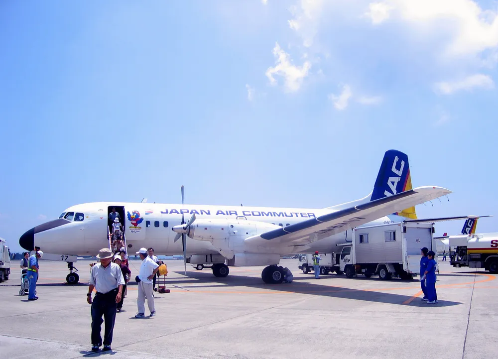
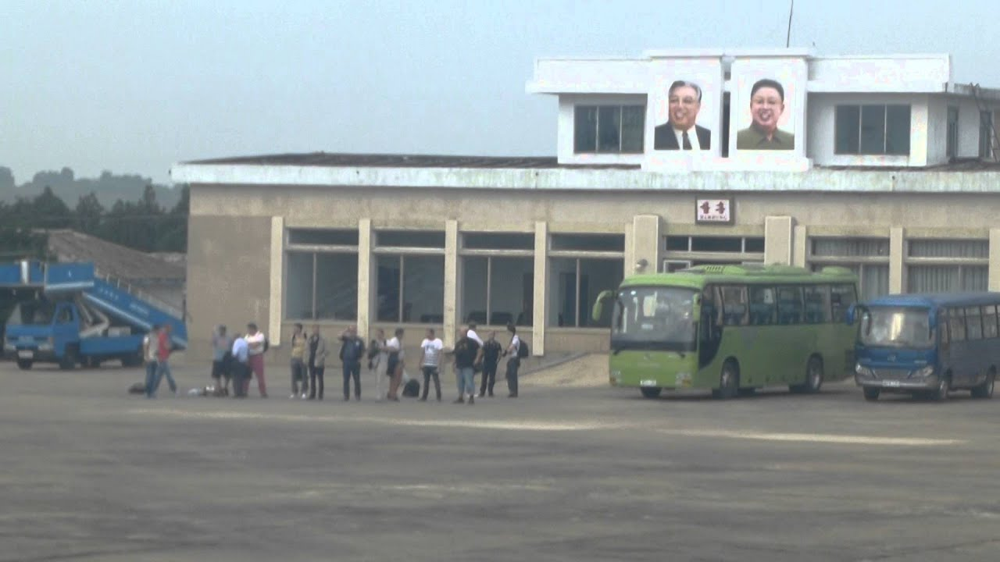

KAL YS-11
December 11th, 1969
NAMC YS-11
From Gangneung
To Gimpo
outline
사건명
대한항공 YS-11기 납북사건
납치 항공편
NAMC YS-11기
출발지
강릉공항
목적지
김포국제공항
사건 발생지
강원도 평창군 대관령 상공
범인
조창희, 북한 공작원
info
1969년 12월 11일, 강릉에서 출발해 서울의 김포국제공항으로 향하던 대한항공NAMC YS-11기

일본항공기제조(NAMC)에서 개발한 일본 최초의 상업용 여객기 및 화물기이다.
국내선 여객기가 승객 47명과 승무원 4명을 태우고 강원도 평창 대관령 일대 상공을 비행 중이었다. 이때 승객으로 위장하고 있던 북한의 공작원
조창희
육군 준장 계급장을 단 제복을 입고 보안검색을 받지 않은 채 VIP 대우로 탑승했다.
에 의해 공중 납치되었다. 승객들은 대관령 상공에 이르렀을 때 객석 앞자리에 있던 조창희가 갑자기 조종실로 들어간 직후 방향이 바뀌는 것을 느꼈고, 동해 상공에 이르렀을 때 2대의 북한 전투기가 KAL를 호위하는 것을 보고 납북된 사실을 알게 되었다. 이후 여객기는 북한의 선덕비행장

북한 함경남도 정평군에 위치한 비행장으로 군 공항의 역할을 주로 한다.
에 강제 착륙했다. 사건 발생 후 약 30시간 뒤, 평양방송은 착륙지점 또한 밝히지 않고 YS-11기가 조종사 2명인 유병하 기장과 최석만 부기장의 자진 입북에 의해 북한에 도착했다고 허위보도한다.

일본항공기제조(NAMC)에서 개발한 일본 최초의 상업용 여객기 및 화물기이다.
육군 준장 계급장을 단 제복을 입고 보안검색을 받지 않은 채 VIP 대우로 탑승했다.

북한 함경남도 정평군에 위치한 비행장으로 군 공항의 역할을 주로 한다.